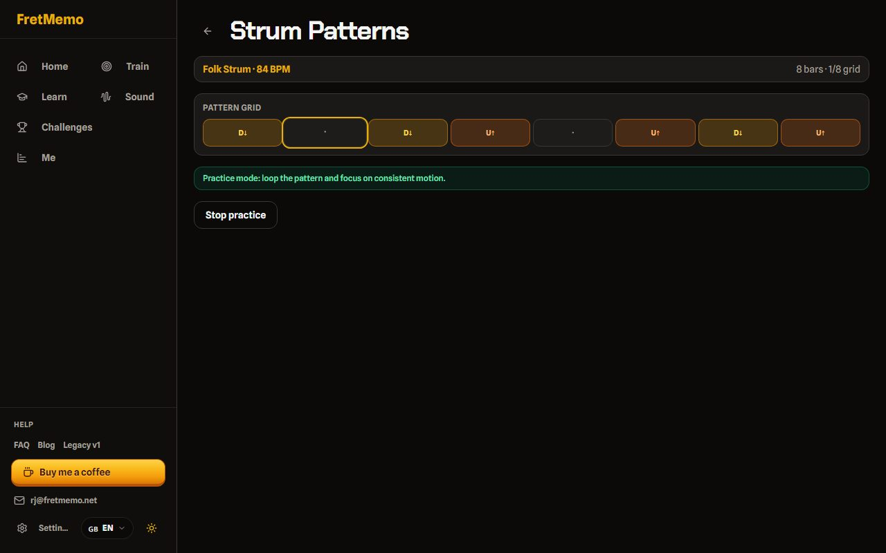

FretMemo's Rhythm Dojo is a free guitar rhythm trainer in the browser with four modes: "Tap the Beat", "Strum Patterns", "Rhythm Reading" and "Groove Lab". You tap on screen or on the keyboard, and the app measures how many milliseconds each hit lands from the beat and, in the strumming modes, whether it went down or up. It does not listen to your guitar: input is tap or keyboard only, and no mode uses the microphone.
A guitar fretboard practice tool that ignores timing only covers half of playing. You can know every note on the neck and still rush the upstroke on the "and" of two, and that's harder to hear in yourself than a wrong note.

Why timing needs its own trainer
Most of us practise timing by playing along with a record and deciding it sounded fine. The trouble is that you can't hear yourself land 40 ms late while you're playing. A trainer that prints the offset of every hit tells you if you land early or late, and by how much.
Strumming adds direction. A folk pattern only grooves if the down and up strokes fall where they should, with the hand moving the whole time. If the app scores direction too, you can fix the motion at a slow tempo before speeding up.
The four modes
- Tap the Beat. Tap every beat with the click. 40 to 200 BPM (80 by default), 8 bars, in 4/4, 3/4 or "6/8 pulse".
- Strum Patterns. Six patterns: "Basic Down" (quarter-note downstrokes), "Folk Strum", "Pop Rock", "Island Strum", "Syncopated" and "16th Note Flow". The "Pattern grid" shows each step as "D↓", "U↑" or a dot for a gap. You press "Down" or "Up", or the arrow keys, and the app scores timing and direction. 50 to 180 BPM.
- Rhythm Reading. Read a notation lane and tap the note heads, not the rests. There are 12 exercises over 6 levels: quarters, eighths, sixteenths, dotted rhythms, triplets and compound 6/8, at 50 to 180 BPM. "Adaptive tempo" is on by default. After a run with a score of 90 or more and accuracy of 88% or more, the next run is 4 BPM faster. A score of 60 or less, or accuracy of 65% or less, makes it 4 BPM slower.
- Groove Lab. Six groove presets: "Straight 8th Rock", "Shuffle Blues", "Reggae Offbeat", "Bossa Nova", "12/8 Ballad" and "Funk 16th", at 60 to 170 BPM, scored on timing and strum direction. With "Echo mode" on, the first half of the bars plays the groove for you to listen to, and in the second half the backing drops out and you play the response.
Scored or practice, and how the score works
Every mode starts with a choice between "Scored" and "Practice". A scored run grades each hit as PERFECT (within 30 ms), GOOD (80 ms) or OK (140 ms) and ends with a summary of "Hits", "Misses", "Extras" and "Avg offset", plus "Direction" in the strumming modes. The score runs from 0 to 100: 70% is accuracy (hits out of expected hits), 20% is your average offset and 10% is consistency, the spread of your offsets. Both timing parts drop to zero at 120 ms. Hit every beat with a 30 ms average offset and a 24 ms spread and you get 70 + 15 + 8 = 93. The best score of each mode is saved in your browser.
"Practice" is unscored ("Play freely with no scoring or stats."), and its start button reads "Practice with guitar". Use it to play along: the click and the grid run while you play the pattern on your guitar, and the app doesn't hear or grade any of it.
Latency, or why on-beat taps can read late
Touch screens and Bluetooth headphones add delay between the click you hear and the tap the browser sees. If your taps feel on the beat but keep getting marked late, raise "Input latency compensation" on the setup screen of any mode. It goes from 0 to 250 ms, and one value is shared by all four modes.
There is also a guided calibration under Me → Settings → Audio, "Input latency (microphone)". You play or clap on 12 clicks at 90 BPM, and "Apply" puts the median offset into this same Rhythm Dojo value. It measures the delay through the microphone, which is a different path from a screen tap, so for tapping I'd take the calibrated number as a starting point and adjust the slider by feel.
How to practice a strumming pattern
- Open fretmemo.net/rhythm/strum-patterns, or go to "Train" → "Rhythm Dojo" → "Strum Patterns".
- Pick "Folk Strum" under "Pattern" and set the tempo to about 70 BPM. Leave "Audio click" on.
- Choose "Practice", press "Practice with guitar", and play the pattern on your guitar a few times while you watch the grid.
- Press "Stop practice". You're back on the setup screen.
- Choose "Scored" and press "Start scored".
- Press "Down" on each "D↓" and "Up" on each "U↑", or use ↓ and ↑ on the keyboard. Keep your hand moving on the dots, but don't press anything.
- Read the summary. When you score in the 90s twice in a row, raise the tempo by 5 BPM.
A short daily set: two minutes of Tap the Beat at 80 BPM, five minutes of one strum pattern, three minutes of Rhythm Reading with "Adaptive tempo" on. Then play the same pattern on a song you know. The posts on how to practice a song on guitar and ear training for guitar cover the other halves of that work.
Limits
- Rhythm Dojo doesn't hear your guitar. It grades taps and key presses, so it trains your sense of time and the direction you intend, not your picking hand on the strings.
- Microphone input for rhythm is a future plan, not something in the app today.
- "Practice" mode is unscored, and "Practice with guitar" means you play along, not that the app listens.
- The calibration in Settings measures microphone delay, which may differ from your tap delay.
FAQ
Is there a free guitar rhythm trainer online?
Yes. FretMemo's Rhythm Dojo is free in the browser without an account. It has four modes, Tap the Beat, Strum Patterns, Rhythm Reading and Groove Lab, and grades every tap against the click in milliseconds.
Does the FretMemo rhythm trainer listen to my guitar?
No. Rhythm Dojo takes taps on the screen or the keyboard: Space or Enter to tap, and the down and up arrow keys for strum direction. It never uses the microphone; in Practice mode you play your guitar along with the click without being scored.
How do I practice strumming patterns with a metronome?
Start slow, around 70 BPM, and keep your strumming hand moving down and up on every subdivision, touching the strings only where the pattern has a stroke. In FretMemo's Strum Patterns you can loop one of six patterns in Practice mode, then switch to Scored to see timing and direction for each stroke.
What do PERFECT, GOOD and OK mean in Rhythm Dojo?
They are timing grades for each hit. PERFECT is within 30 ms of the beat, GOOD within 80 ms and OK within 140 ms.
Practice a strum pattern
Pick a pattern, loop it with your guitar, then score it with taps or the arrow keys.
Open Strum Patterns Free, no account, runs in the browser.